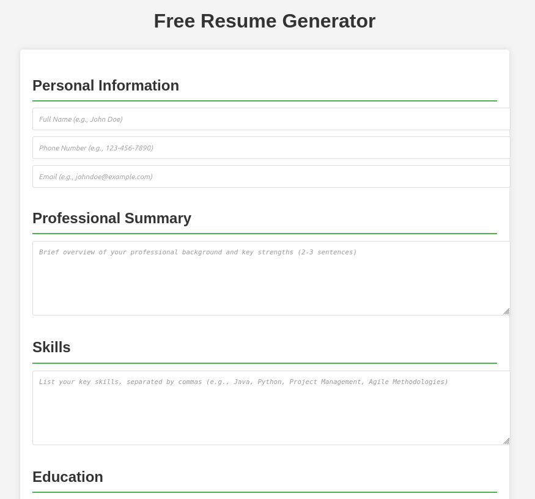
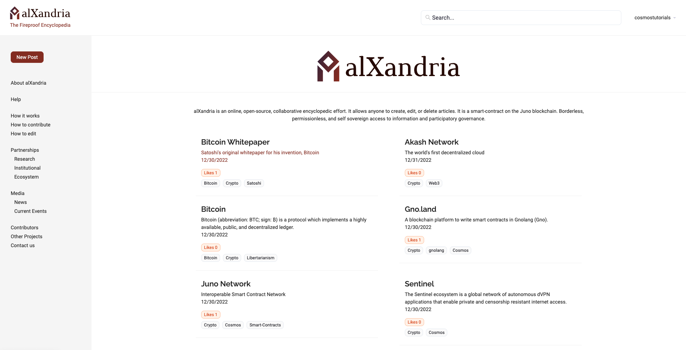

Eschrow.com
A decentralized and free escrow contract creation and execution service. Designed for the Cosmos blockchain.
A decentralized and free escrow contract creation and execution service. Designed for the Cosmos blockchain.
A decentralized marketplace with a built-in, privacy preserving reputation system. Designed for the Cosmos ecosystem.

Create professional resumes for free. No payment required, no AI gimmicks. Just a simple, effective tool to build your perfect resume.

This merge increased the default hashing iteration count from 5,000 to 100,000 for Red Hat Enterprise Linux through the CentOS stream. For cycles which are linear functions of iteration counts, like PBKDF2, 100,000 rounds is 20x more difficult to brute force than 5,000.
Scripts to automate Security Technical Implementation Guide (STIG) checks. These are technical security standards created by the Defense Information Systems Agency (DISA). These scripts are designed to be used with the DISA STIG Viewer tool.

alXandria was a program written in Rust that allowed anyone to post, edit, or delete articles. Article storage occurred on IPFS, the revision log was stored on the Juno blockchain, and fees were paid through Juno tokens.
No letters are secularly verifiable as authentically Pauline, and thus there is no authoritative reference point from which to effectively employ computational stylometric analyses. This study illustrates the limits of importing quantitative methods into disciplines with unresolvable historical dependencies.
"Your outstanding and positive impact to numerous technical assessments on end points directly supporting the overall computing environment secure mission assurance is recognized and appreciated."
"Due to your outstanding client service and passionate dedication to go above and beyond this award is to recognize your hard work, flexibility, and dedication to helping the client ensure the proper security of their enterprise network and devices. You were given a very short, accelerated timeline to accomplish 11 individual cyber vulnerability security assessments for all different types of technology and devices in only 6 weeks time...you knocked it out of the park! Praises for your accomplishment have been heard from all levels of leadership. Thank you for continuing to be outstanding!"
"I would like to express appreciation for one of the current personnel within my section, Tony Rosa. Tony never complains, always up to the task and willing to go the extra mile, ensuring mission success. an incredible wealth of technical knowledge, real world experience and practical application of that knowledge to drive through challenges and validate accuracy of data. The job we do requires a special individual capable of sifting through multiple information streams to capture highlights and seek out root causes. Tony has this in spades."
The BRAVO Hackathon was an event to help the Department of Defense by combining the information-technology knowledge of civilians and service members. Rosa's team won first place for "Most Tactically Relevant for Maintenance Data," and second place for "Most Tactically Relevant for Cyber Operations" with their program.
"First Lieutenant Rosa provided government agencies with programs and scripts to enhance U.S. cyber capabilities reaching far beyond his responsibilities at Marine Unmanned Aerial Vehicle Squadron 2. First Lieutenant Rosa's bold leadership, wise judgement, and dedication to duty reflected credit on him and were in keeping with the highest traditions of the Marine Corps and United States Naval Service."
"Led 6 applications into production for the DoD. Singularly designed an antivirus scripting solution adopted by multiple platforms for applications unable to utilize hardened antivirus images from DoD IronBank...Led a mission application transferring passenger and positional data to help evacuate over 123,000 refugees during Operation Allies Refuge...Led 3 Artificial Intelligence Applications into production supporting DoD activites in hostile environments."